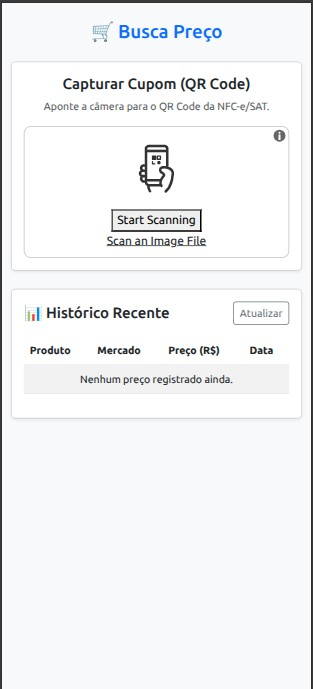

Field research
48
people interviewed
Field research helped the team decide what to prioritize in the first prototype.
Integrative Project III • UNIVESP • 2026
A prototype that turns fiscal receipts into a price history, designed to help families compare everyday purchases and plan their next shopping trip.

I contributed to the team’s product decisions, interface, architecture concept and documentation, and reviewed the code. I also led and produced the full project presentation.
01 / What research showed
The team spoke with people who shop at different points in the month. One product decision followed from that research: people should not have to search for or enter every item by hand.
48
Field research helped the team decide what to prioritize in the first prototype.
43 / 48
The team prioritized scanning the QR code printed on the receipt.
32 / 48
A useful history needs to reflect everyday shopping, not only a monthly stock-up.
These figures come from Group 19's project research. They describe its interview sample and should not be read as a broad market survey.
02 / How it works
The flow combines a camera, data extraction and a history organized by product, store and date. Select a step to see what happens behind the screen.
This section is a guided view of the screens and flow documented by the team. Its short architecture summary follows the technical diagram and runtime logs in the final report.
03 / What the prototype surfaced
By logging grocery receipts, the team explored how prices and variety changed across the week at one local retailer.
Observed sample
up to 15%
In the Atacadão sample, recorded prices were higher from Friday to Sunday.
Reading by day of week
On Monday, the report also recorded fewer options.
Technical decisions
Go processes receipt data; PostgreSQL keeps relationships among products, stores and price history. Docker packages the services into containers.
The percentage describes the sample studied by the team. It is not a guaranteed saving or a forecast for other stores and periods.
04 / Team presentation
The presentation introduces the problem and prototype, then follows the receipt scan and the data flow.